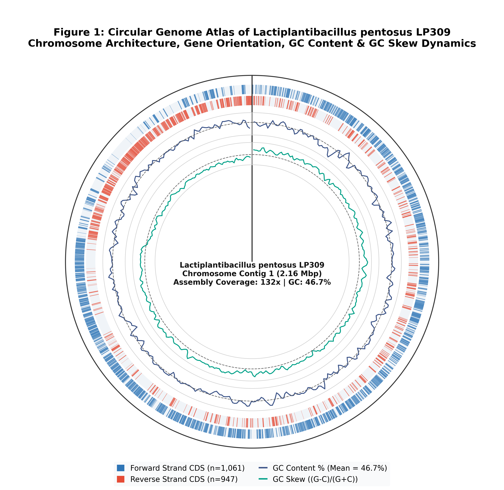
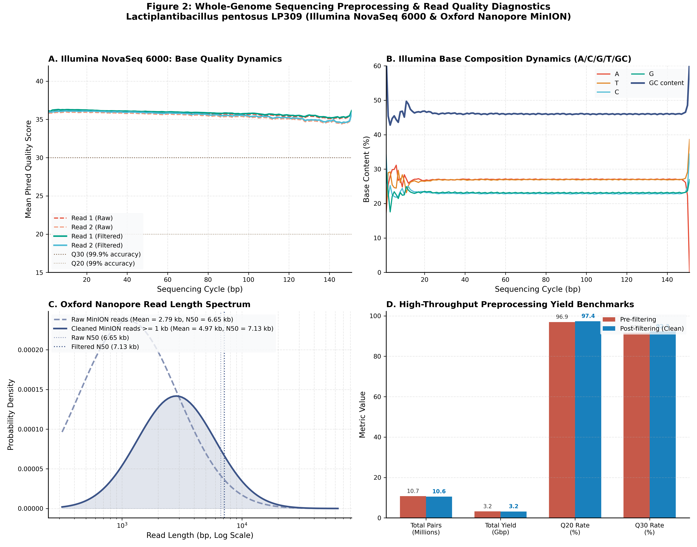
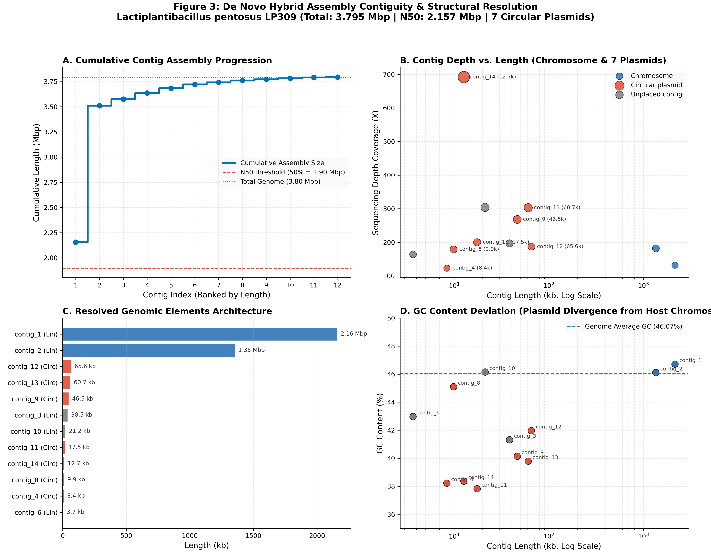
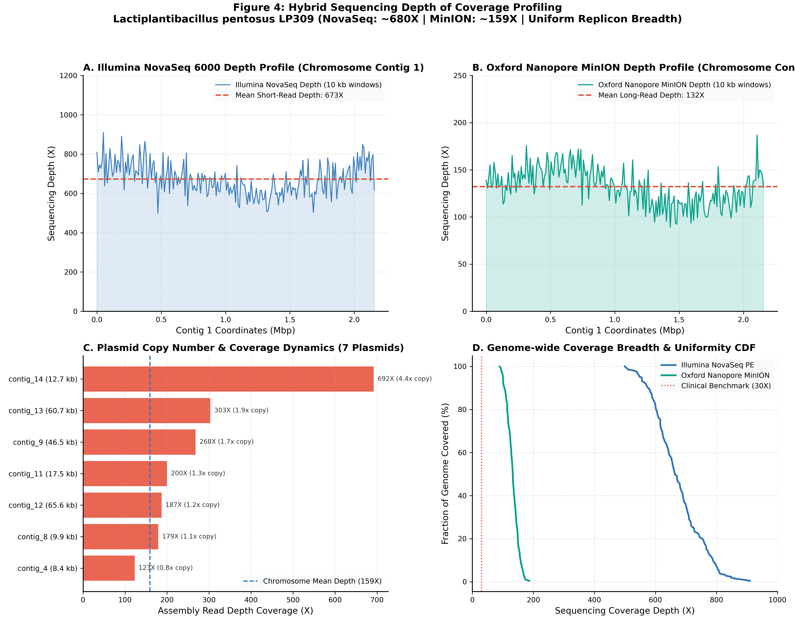
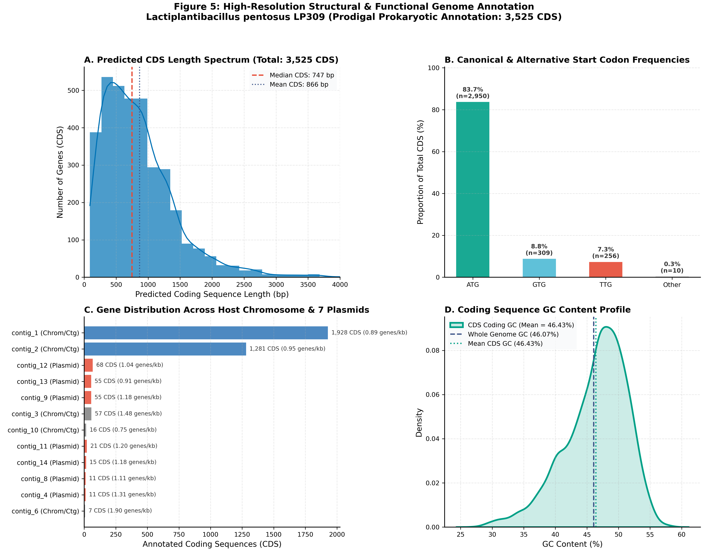

| Contig ID | Length (bp) | GC Content (%) | Coverage (X) | Conformation | Biological Classification |
|---|---|---|---|---|---|
| contig_1 | 2,156,644 | 46.71% | 132X | Linear | Chromosome major scaffold |
| contig_2 | 1,353,778 | 46.11% | 182X | Linear | Chromosome secondary scaffold |
| contig_12 | 65,557 | 41.97% | 187X | Circular | Circular Plasmid 1 (65.6 kb) |
| contig_13 | 60,695 | 39.79% | 303X | Circular | Circular Plasmid 2 (60.7 kb) |
| contig_9 | 46,488 | 40.14% | 268X | Circular | Circular Plasmid 3 (46.5 kb) |
| contig_3 | 38,531 | 41.31% | 197X | Linear | Unplaced chromosomal repeat |
| contig_10 | 21,244 | 46.15% | 304X | Linear | Unplaced chromosomal repeat |
| contig_11 | 17,521 | 37.82% | 200X | Circular | Circular Plasmid 4 (17.5 kb) |
| contig_14 | 12,696 | 38.36% | 692X | Circular | Circular Plasmid 5 (12.7 kb, 4.4x copy) |
| contig_8 | 9,889 | 45.10% | 179X | Circular | Circular Plasmid 6 (9.9 kb) |
| contig_4 | 8,391 | 38.22% | 123X | Circular | Circular Plasmid 7 (8.4 kb) |
| contig_6 | 3,686 | 42.97% | 164X | Linear | Small unplaced contig |




